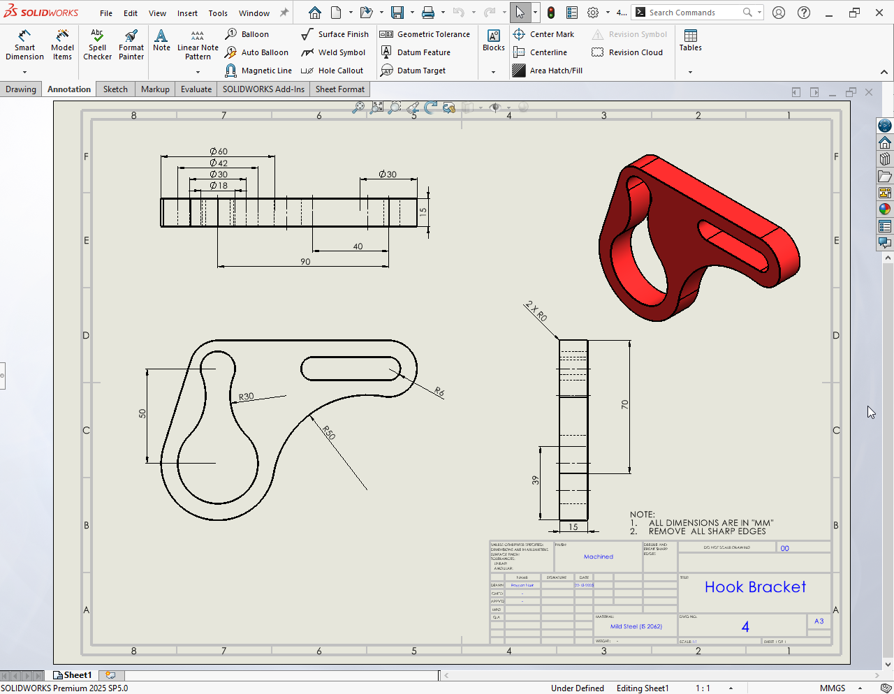

3D Hook Bracket
This project is a 3D model of a mechanical hook bracket designed and rendered in SolidWorks. It was created to demonstrate part modeling techniques, the use of geometric constraints, and the application of structural features in mechanical engineering.

About Project
The modeling process began with a 2D sketch on the Front Plane, defining the base profile and central mounting arm. Using the Boss-Extrude tool, I created the solid volume, followed by Cut-Extrude operations to place precise bolt holes and slots for mounting.
To ensure structural integrity and a realistic finish, I applied Fillets to all sharp edges, reducing potential stress concentrations. I also utilized Mirrored Features to maintain perfect symmetry across the bracket’s design, ensuring it meets industrial design standards.
Through this project, I gained proficiency in Parametric Modeling and learned how to manage the Feature Manager Design Tree to keep the workflow organized and easily editable.